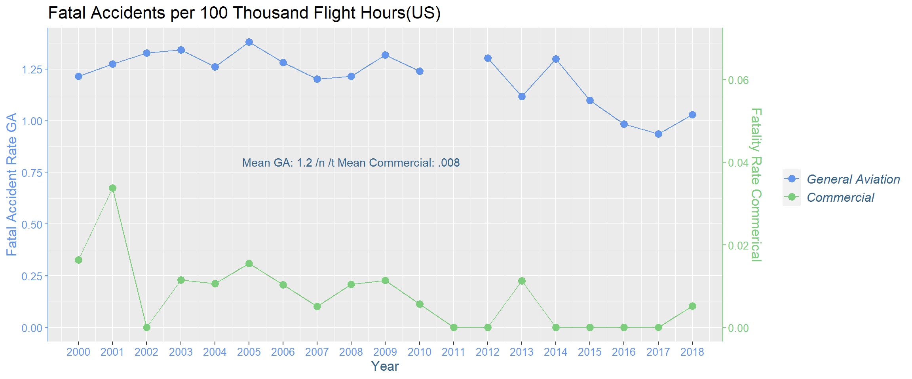
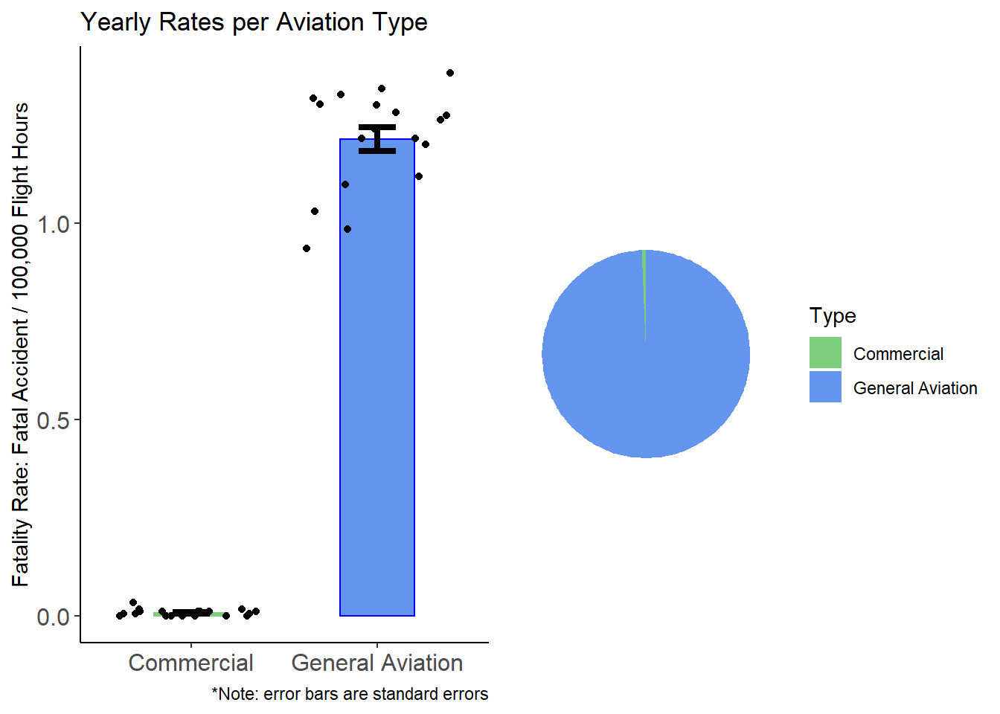
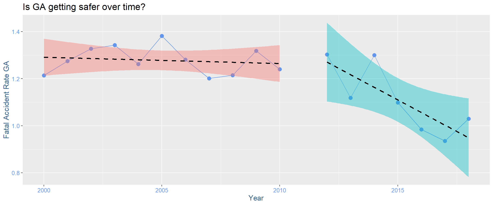

pacman:: p_load(httr, jsonlite, dplyr, openxlsx, ggplot2, knitr, tibble, gt, tidyverse, glue, formattable, kableExtra, imager, reshape2, gridExtra)I obtained data from link the American Bureau of Transportation Statistics (BTS). The BTS have been required by law to investigate and report public use accidents since 1995. Their data is accessible, free and transparent, so I selected it as a reliable source of data.
**note: General aviation (GA) is defined as non-military and non scheduled flight. GA typically involves smaller aircrafts and often for recreation and private transport.
comm_url <- "https://www.bts.gov/sites/bts.dot.gov/files/table_02_09_121819.xlsx"
filename = (paste((getwd()),"/comm_data_table.xlsx", sep = ""))
invisible(download.file(url = comm_url, destfile = filename, mode='wb'))
comm_data <- read.xlsx(filename, startRow = 2, colNames = TRUE, rowNames = FALSE)
comm_data <- comm_data[1:22,] ## data ends on row 24. It is followed by paragprahs of annotations
comm_data <- as.matrix(comm_data)
rn <- comm_data[,1]
rownames(comm_data) <- rn
comm_data <- comm_data[,2:ncol(comm_data)]
comm_transpose <- as.data.frame(t(as.matrix(comm_data)))
comm_transpose$year <- rownames(comm_transpose)
comm_transpose <- comm_transpose[2:nrow(comm_transpose),]
comm_transpose <- comm_transpose[comm_transpose$year >= 2000,]
df_comm_transpose <- as.data.frame(comm_transpose)
df_comm_transpose_numeric <- data.frame(lapply(df_comm_transpose, function(x) as.numeric(as.character(x)))) # change variables from factors to numeric
comm_fatality_rate <- c(df_comm_transpose_numeric$Total.accidents..fatal.2)
head(df_comm_transpose_numeric)## Total.fatalities Total.seriously.injured.persons Total.accidents
## 1 92 31 56
## 2 531 19 46
## 3 0 24 41
## 4 22 31 54
## 5 14 20 30
## 6 22 14 40
## Fatal.accidents Aircraft.miles..millions.
## 1 3 7524.027
## 2 6 7294.191
## 3 0 7192.501
## 4 2 7280.383
## 5 2 7930.159
## 6 3 8165.643
## Rates.per.100.million.aircraft.miles Fatalities Seriously.injured.persons
## 1 NA 1.2227490 0.4120134
## 2 NA 7.2797660 0.2604813
## 3 NA 0.0000000 0.3336809
## 4 NA 0.3021819 0.4258018
## 5 NA 0.1765412 0.2522018
## 6 NA 0.2694215 0.1714501
## Total.accidents.1 Total.accidents..fatal Aircraft.departures..thousands.
## 1 0.7442823 0.03987227 11468.23
## 2 0.6306388 0.08225724 10954.83
## 3 0.5700382 0.00000000 10508.47
## 4 0.7417192 0.02747108 10433.16
## 5 0.3783026 0.02522018 11023.13
## 6 0.4898573 0.03673930 11130.41
## Rates.per.100.000.aircraft.departures Fatalities.1
## 1 NA 0.8022163
## 2 NA 4.8471760
## 3 NA 0.0000000
## 4 NA 0.2108660
## 5 NA 0.1270057
## 6 NA 0.1976567
## Seriously.injured.persons.1 Total.accidents.2 Total.accidents..fatal.1
## 1 0.2703120 0.4883056 0.02615923
## 2 0.1734394 0.4199060 0.05477035
## 3 0.2283871 0.3901613 0.00000000
## 4 0.2971294 0.5175803 0.01916964
## 5 0.1814367 0.2721551 0.01814367
## 6 0.1257816 0.3593759 0.02695319
## Flight.hours..thousands. Rates.per.100.000.flight.hours Fatalities.2
## 1 18299.26 NA 0.50275270
## 2 17814.19 NA 2.98077000
## 3 17290.20 NA 0.00000000
## 4 17467.70 NA 0.12594670
## 5 18882.50 NA 0.07414271
## 6 19390.03 NA 0.11346040
## Seriously.injured.persons.2 Total.accidents.3 Total.accidents..fatal.2 year
## 1 0.16940580 0.3060234 0.01639411 2000
## 2 0.10665650 0.2582211 0.03368101 2001
## 3 0.13880700 0.2371286 0.00000000 2002
## 4 0.17747040 0.3091420 0.01144970 2003
## 5 0.10591820 0.1588772 0.01059182 2004
## 6 0.07220206 0.2062916 0.01547187 2005The above table is not very readable an imported. I am going to re-format using American Psychological Association (APA) format. I needed to use a Cascading Style Sheet file (CSS) to specify the style formats. The CSS file was called on in my rmarkdown script.
I selected the data that corresponds to the nnumber of fatal accidents per 100 thousand hours of flight. Fatality accidents per time is the metric I am interested in, because they more closely corresponds to pilot error, which I am hoping we can have control over and can correct to some extent. Total fatalities on the other hand can be more closely related to number of passengers. A lot of fatalities can occur with very few pilot errors, and there is less room to improve pilot performance. Improvements would likely be seen adjusting other parameters, such as passenger capacity, distance of flight etc.
colnames(df_comm_transpose_numeric) <- c('Fatalities','Injured persons', 'Accidents', 'Fatal Accidents', 'Aircraft miles(mill)','Rate/mill miles', 'Fatalities','Injured persons', 'Accidents', 'Fatal Accidents','Aircraft Departures','rates 1000', 'Fatalities','Injured persons', 'Accidents','Fatal Accidents', 'Flight hours', 'Rates per 100 hours', 'Fatalities','Injured persons','Accidents', 'Fatal Accidents', 'Year' )
table_function <- function(table, caption, note){kable(table, format = "html",col.names = colnames(table), align = c(rep("c", times = ncol(table))),
caption = caption) %>%
kable_styling(full_width = TRUE) %>%
row_spec(row = 0, align = "c") %>%
footnote(general_title = "Note.", general = note,
footnote_as_chunk = TRUE)}
table <- df_comm_transpose_numeric[, 19:ncol(df_comm_transpose_numeric)] # these columns are variables that correspond to rates per 100 thousand hours of flight.
caption <- "Commercial aviation safety statistics. Values per 100 thousand hours of flight"
note <- "These statistics were obtained from the US Beareau of Transportation Statistics"
table_function(table, caption, note)| Fatalities | Injured persons | Accidents | Fatal Accidents | Year |
|---|---|---|---|---|
| 0.5027527 | 0.1694058 | 0.3060234 | 0.0163941 | 2000 |
| 2.9807700 | 0.1066565 | 0.2582211 | 0.0336810 | 2001 |
| 0.0000000 | 0.1388070 | 0.2371286 | 0.0000000 | 2002 |
| 0.1259467 | 0.1774704 | 0.3091420 | 0.0114497 | 2003 |
| 0.0741427 | 0.1059182 | 0.1588772 | 0.0105918 | 2004 |
| 0.1134604 | 0.0722021 | 0.2062916 | 0.0154719 | 2005 |
| 0.2595622 | 0.0467212 | 0.1713110 | 0.0103825 | 2006 |
| 0.0050923 | 0.0814775 | 0.1425856 | 0.0050923 | 2007 |
| 0.0156848 | 0.1045655 | 0.1411634 | 0.0104566 | 2008 |
| 0.2950048 | 0.1475024 | 0.1701951 | 0.0113463 | 2009 |
| 0.0112670 | 0.0957693 | 0.1690047 | 0.0056335 | 2010 |
| 0.0000000 | 0.1169072 | 0.1837113 | 0.0000000 | 2011 |
| 0.0000000 | 0.1015673 | 0.1467083 | 0.0000000 | 2012 |
| 0.0506197 | 0.0506197 | 0.1293614 | 0.0112488 | 2013 |
| 0.0000000 | 0.0789051 | 0.1747185 | 0.0000000 | 2014 |
| 0.0000000 | 0.1338854 | 0.1617782 | 0.0000000 | 2015 |
| 0.0000000 | 0.0983926 | 0.1639877 | 0.0000000 | 2016 |
| 0.0000000 | 0.1022529 | 0.1722153 | 0.0000000 | 2017 |
| 0.0051845 | 0.1296123 | 0.1555347 | 0.0051845 | 2018 |
| Note. These statistics were obtained from the US Beareau of Transportation Statistics |
GA_url <- "https://www.bts.gov/sites/bts.dot.gov/files/table_02_14_121819.xlsx" ## downloading commercial accident data from Bureau of Transportation Statistics (US)
filename = (paste((getwd()),"/GA_data_table.xlsx", sep = ""))
download.file(url = GA_url, destfile = filename, mode='wb')
GA_data <- read.xlsx(filename, startRow = 2, colNames = TRUE, rowNames = FALSE)
GA_data <- GA_data[1:10,]
GA_data <- as.matrix(GA_data)
rn <- GA_data[,1]
rownames(GA_data) <- rn
GA_data <- GA_data[,2:ncol(GA_data)]
GA_transpose <- as.data.frame(t(as.matrix(GA_data)))
GA_transpose$year <- rownames(GA_transpose)
GA_transpose <- GA_transpose[2:nrow(GA_transpose),]
GA_transpose$year <- rownames(GA_transpose)
GA_transpose <- GA_transpose[GA_transpose$year >= 2000,]
df_GA_transpose <- as.data.frame(GA_transpose)
df_GA_transpose_numeric <- data.frame(lapply(df_GA_transpose,
function(x) as.numeric(as.character(x)))) # change variables from factors to numeric
GA_fatality_rate <- c(df_GA_transpose_numeric$Total.accidents..fatala.b) df_GA_transpose_numeric <- df_GA_transpose_numeric[,7:11]
colnames(df_GA_transpose_numeric) <- c('Fatalities','Injured persons','Accidents',
'Fatal Accidents', 'Year')
table <- df_GA_transpose_numeric
caption <- "General Aviation safety statistics. Values per 100 thousand hours of flight"
note <- "These statistics were obtained from the US Beareau of Transportation Statistics"
table_function(table, caption, note)| Fatalities | Injured persons | Accidents | Fatal Accidents | Year |
|---|---|---|---|---|
| 2.140958 | 1.1135860 | 6.573748 | 1.2141680 | 2000 |
| 2.213921 | 1.2661710 | 6.779394 | 1.2740860 | 2001 |
| 2.274418 | 1.1626540 | 6.690155 | 1.3270700 | 2002 |
| 2.434896 | 1.2424510 | 6.681540 | 1.3424630 | 2003 |
| 2.246062 | 1.0647700 | 6.493089 | 1.2616520 | 2004 |
| 2.430106 | 1.1697310 | 7.203991 | 1.3812330 | 2005 |
| 2.946217 | 1.1058750 | 6.347302 | 1.2811450 | 2006 |
| 2.082400 | 1.0705890 | 6.935736 | 1.2007390 | 2007 |
| 2.174995 | 1.1357330 | 6.867021 | 1.2146650 | 2008 |
| 2.305642 | 1.3086080 | 7.075110 | 1.3181950 | 2009 |
| 2.111727 | 1.1803540 | 6.630270 | 1.2402940 | 2010 |
| NA | NA | NA | NA | 2011 |
| 2.097601 | 1.1828940 | 7.039895 | 1.3026200 | 2012 |
| 2.000784 | 1.0978660 | 6.258864 | 1.1183870 | 2013 |
| 2.151153 | 1.2030140 | 6.229167 | 1.2998670 | 2014 |
| 1.837085 | 1.2052830 | 5.851457 | 1.0983630 | 2015 |
| 1.809340 | 0.9327944 | 5.934260 | 0.9843559 | 2016 |
| 1.525155 | 0.9491898 | 5.672100 | 0.9353667 | 2017 |
| 1.758729 | 1.0617000 | 5.876280 | 1.0293880 | 2018 |
| Note. These statistics were obtained from the US Beareau of Transportation Statistics |
# construct dataframe of fatality rates and year.
Values <- c( comm_fatality_rate, GA_fatality_rate)
Type <- c(rep("Commercial", times= nrow(comm_transpose)), rep("General Aviation", times = nrow(comm_transpose)))
Year <- as.numeric(c(rep(comm_transpose$year, times = 2)))
df <- data.frame(Type, Values, Year)
mytheme <- theme(plot.title = element_text(family = "Times New Roman", size = (16)), legend.title = element_blank(), legend.text = element_text(face = "italic", colour="steelblue4",family = "Times New Roman", size = (12)), axis.title = element_text(family = "Times New Roman", size = (13), colour = "steelblue4" ), axis.text = element_text(family = "Times New Roman", colour = "cornflowerblue", size = (10), margin = margin(t = 0, r = 0, b = 40, l = 40)))
df$Values[df$Type == 'Commercial'] <- df$Values[df$Type == 'Commercial'] * 20 # modifying for double y axis plot. The y scale is divided by 20 in plot.
p <- ggplot(df, aes(Year, Values, colour = Type)) + mytheme + geom_point(size = 3) + geom_line() + ylab('Fatal Accident Rate GA') + xlab ('Year') + labs(title = "Fatal Accidents per 100 Thousand Flight Hours(US)")
p <- p + scale_x_continuous(breaks = c(2000:2018), labels = c(df$Year[1:19])) + scale_y_continuous(breaks = seq(0, 1.5, by = 0.25), sec.axis = sec_axis(~./20, name = "Fatality Rate Commerical"))
p <- p + scale_colour_manual(values=col_scheme <- c("palegreen3", "cornflowerblue"))
p <- p + theme(axis.line.y.right = element_line(color = "palegreen3"), axis.ticks.y.right = element_line(color = "palegreen3"), axis.text.y.right = element_text(color = "palegreen3"), axis.title.y.right = element_text(color = "palegreen3"))
p <- p + theme(axis.line.y.left = element_line(color = "cornflowerblue"), axis.ticks.y.left = element_line(color = "cornflowerblue"), axis.text.y.left = element_text(color = "cornflowerblue"), axis.title.y.left = element_text(color = "cornflowerblue"))
p <- p + guides(colour = guide_legend(reverse = T)) + annotate("text", x = 2008, y = 0.8, label = "Mean GA: 1.2 /n /t Mean Commercial: .008", colour = "steelblue4")
p
On average there are 15 times more accidents resulting in a death during GA flight than commercial flight. I am going to revisualize the data to make this difference more intuitive. Notice that I adjusted the scales in previous figure in order to fit both lines in the graph
## create data frame. This will be used as data points in barchart
df <- data.frame(Type, Values, Year)
GA <- df[df$Type == "General Aviation", 2]
COMM <- df[df$Type == "Commercial", 2]
d <- data.frame(GA, COMM)
colnames(d)<- c('General Aviation', 'Commercial')
m.d <- melt(d)
# create values for error bars and means. place into data frame. This will give the size of barchart and the length of error bars
se <- function(x){sd(x)/sqrt(length(x))}
ses <- c(se((COMM)), se(na.omit(GA)))
means <- c(mean((COMM)),mean(na.omit(GA)))
Type <- unique(df$Type)
dat_sum <- data.frame(Type, means, ses)
## format barchart
p1 <- ggplot(dat_sum, aes(y=means,x=Type)) + geom_bar(stat="identity",width=0.4, colour = c("palegreen3", "blue"), fill=c("palegreen3", "cornflowerblue")) + scale_fill_manual(values=c("palegreen3", "cornflowerblue")) + geom_errorbar(stat="identity",width=0.2, ymin=means-ses,ymax=means+ses, size = 1.5) + theme_classic() + geom_point(data = m.d, aes(variable, value), position = "jitter") + labs(title = "Yearly Rates per Aviation Type", caption = "*Note: error bars are standard errors") + ylab("Fatality Rate: Fatal Accident / 100,000 Flight Hours") + theme(axis.text=element_text(size=12), axis.title.x = element_blank())
## fomart pie chart
p2 <- ggplot(dat_sum, aes(x="", y=means, fill=Type))+ geom_bar(width = 1, stat = "identity")
p2 <- p2 + coord_polar(theta = "y")
blank_theme <- theme_minimal()+
theme( axis.text = element_blank(), axis.title.x = element_blank(), axis.title.y = element_blank(), panel.border = element_blank(), panel.grid=element_blank(), axis.ticks = element_blank(), plot.title=element_text(size=14, face="bold"))
p2 <- p2 + blank_theme + scale_fill_manual(values=c("palegreen3", "cornflowerblue"))
grid.arrange(p1, p2, nrow = 1)
These charts show just how staggering the difference is in rate of fatality between the two types of aviation.
The second thing we can see from the previous line graph is that perhaps fatality rates are improving in recent years for GA. This may be a result of enhance usability design and perhaps the organizing and automation of instruments lessening pilot workload.
# construct dataframe of fatality rates and year.
Values <- c( comm_fatality_rate, GA_fatality_rate)
Type <- c(rep("Commercial", times= nrow(comm_transpose)), rep("General Aviation", times = nrow(comm_transpose)))
Year <- as.numeric(c(rep(comm_transpose$year, times = 2)))
df <- data.frame(Type, Values, Year)
df <- df[20:nrow(df),]# just evaluating GA trends
df$seg<- c(rep('b', times = 11), rep('g', times = 8))
mytheme <- theme(plot.title = element_text(family = "Times New Roman", size = (16)), legend.title = element_blank(), legend.position = "none", legend.text = element_blank(), axis.title = element_text(family = "Times New Roman", size = (13), colour = "steelblue4" ), axis.text = element_text(family = "Times New Roman", colour = "cornflowerblue", size = (10),margin = margin(t = 0, r = 0, b = 40, l = 40)))
p <- ggplot(df, aes(Year, Values, fill = seg)) + geom_point(size = 3, colour = "cornflowerblue") + geom_line(colour = "cornflowerblue" ) + ylab('Fatal Accident Rate GA') + xlab ('Year') + labs(title = "Is GA getting safer over time?") + mytheme
p <- p + geom_smooth(method = lm, se = T, colour = 'black', linetype = "dashed")
p
continue with analysis